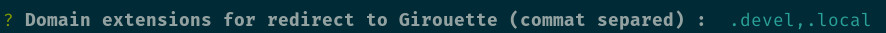
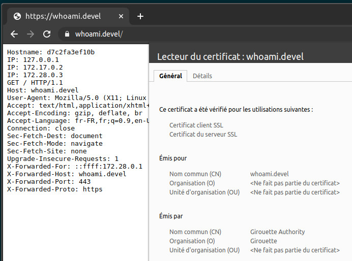
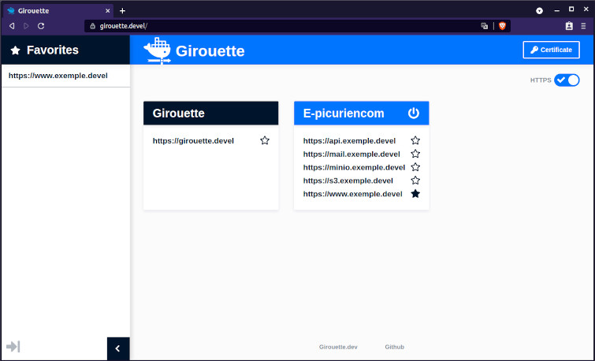

Girouette it’s a DNS proxy, load balancer (compatible with traefik label) and certificate generator for working with docker for development.
Install or Update
Requirements :
- Docker
- Ports :
80,443and53 - Set you’r primary DNS server to
127.0.0.1
With curl:
$ bash -c "$(curl -fsSL https://raw.githubusercontent.com/apoutchika/proxy/master/girouette.sh)"
With wget :
$ bash -c "$(wget https://raw.githubusercontent.com/apoutchika/proxy/master/girouette.sh -O -)"
What is Girouette ?
DNS Server
When you’r install Girouette, choice the domain extentions to redirect in localhost :

Configure you’r network connexion with primary DNS server 127.0.0.1
HTTPS
Girouette create SSL certificates autosigned for you. Just add an authority certificate to your browser after installation, the rest is done by itself.

Interface
You can go to https://girouette.devel/ and see real time interface :
- List of container started with domain label
- Click link to open, add to favorite or switch to http / https
- Stop docker-compose project

Documentation
You must use Label for list domain
With docker-compose :
version: '3.7'
services:
whoami:
image: emilevauge/whoami
labels:
girouette.domains: whoami.devel:80,test.local:80 # List domains and port (default is 80)
With docker
$ docker run \
--label girouette.domains="whoami.devel:80" \
emilevauge/whoami
Compatible with traefik labels
version: '3.7'
services:
whoami:
image: emilevauge/whoami
labels:
traefik.frontend.rule: 'Host:whoami.devel'
traefik.port: 80